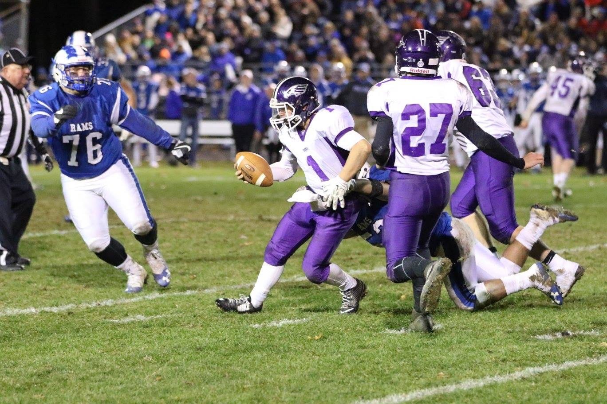
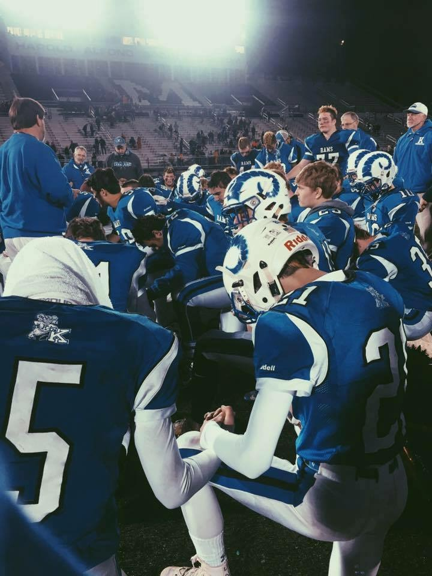

Kennebunk Football
The link above is an article from the Portland Press Herald about one of our big playoff wins.
Football is/was a very important part of my childhood and growing up. I played throughout middle school but ended up quitting after eighth grade to focus on basketball. I eventually came back to football in 11th grade and it the two years I played in High School were some of the best times of my life.
"The supreme quality for leadership is unquestionably integrity. Without it, no real success is possible, no matter whether it is on a section gang, a football field, in an army, or in an office." - Dwight D. Eisenhower
 